独立F6：scenes/dev/cryo_4f_camera_compare_v6.tscn。1–5切换镜头A–E；T切换沿墙距离／门前区域；R切换50%半显／100%实体对照；F7切换自动／强制隐藏／强制显现；F8到门外，Home回室内。E沿用认证、开门与黑门洞穿越。入口从Room1开始，按F8可直接比较。A与距离规则只是首个测试状态，尚未选定最终方案。
按用户澄清：相机始终留在前侧墙外；前侧门墙平时隐藏，靠近后整段渐显，离开渐隐。没有人物周围挖洞。墙门按房间的21m左右边界分段，共32个前侧门墙段；单一可见表面复用原像素颜色、UV与光图，背景房壳仅在当前走廊视图隐藏，物理碰撞保持。
实现、取舍及复建 · 功能验证 · 图像测量 · 逐图相机记录
统一高度2.2m、1280×720。同一状态下五种镜头使用相同人物位置。B/C/D的角色大小接近，用于比较前移、镜头缩角及组合的透视差异；E保留更紧的构图作比较。下方空白比例是走廊中线、前墙隐藏时，下边地坪边界之外的屏幕占比；不代表所有姿态的空白比例。
| 方案 | 方式 | 距离 | 水平FOV | 前景空白 | 实测角色高 | 相机墙外余量 |
|---|---|---|---|---|---|---|
| A | 原构图 | 8m | 50° | 22.6% | 232px | 6.6m |
| B | 前移 | 6m | 50° | 10.5% | 302px | 4.6m |
| C | 缩小视角 | 8m | 38.5° | 13.4% | 310px | 6.6m |
| D | 适度组合 | 7m | 44° | 12.6% | 304px | 5.6m |
| E | 更近构图 | 4m | 50° | 0.0% | 423px | 2.6m |
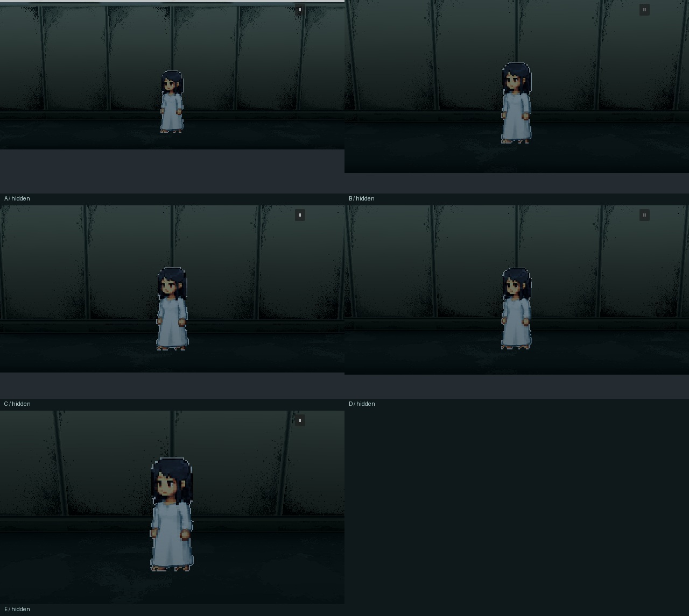
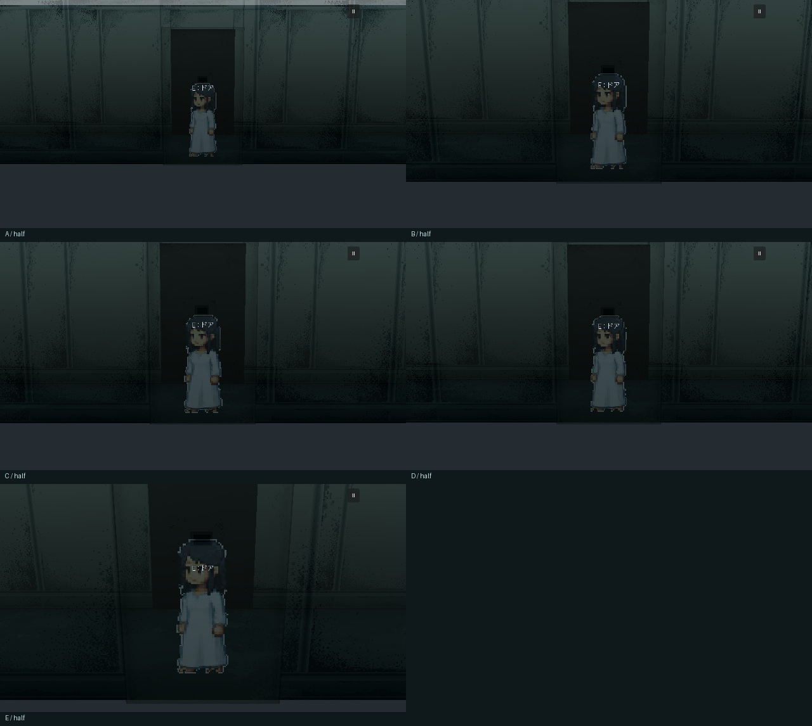
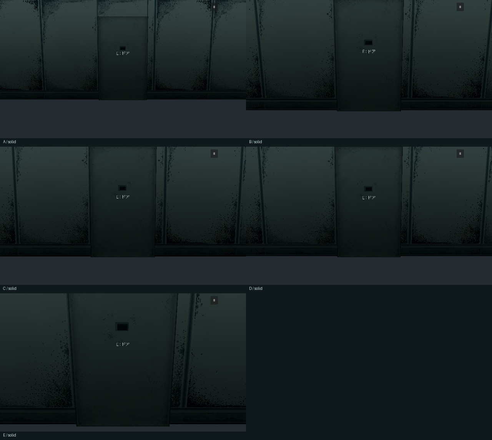
距离规则：靠近这段墙的任何位置都会显现。区域规则：还要位于门中心左右1.2m内；离开到1.5m外才释放。两种规则进入墙面距离1.15m，退出1.35m，离开保持0.20s后渐隐，显隐渐变0.28s。门认证期间在原交互范围内额外保持其显示面可读。
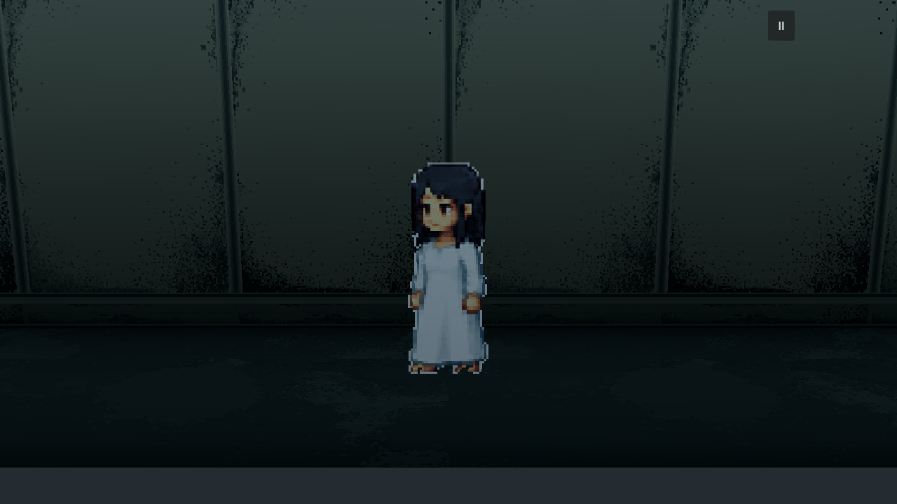
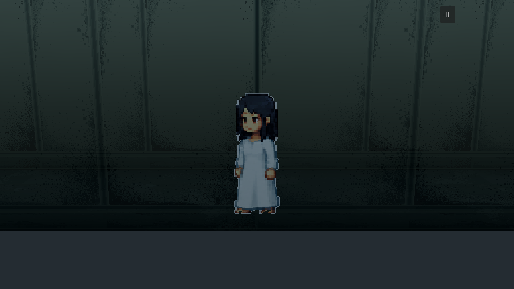
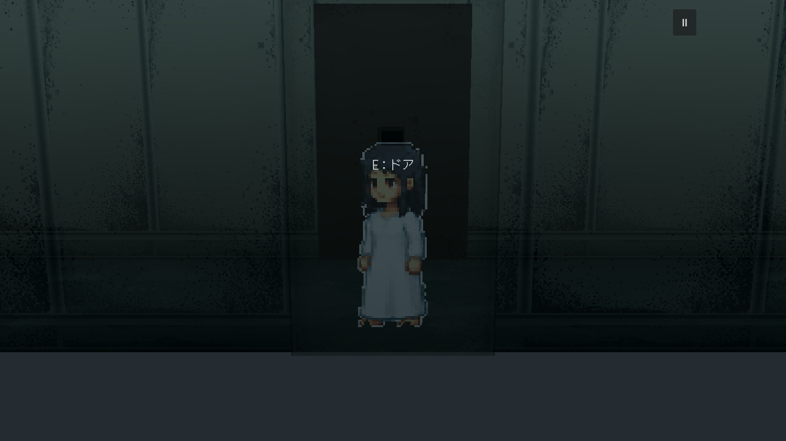
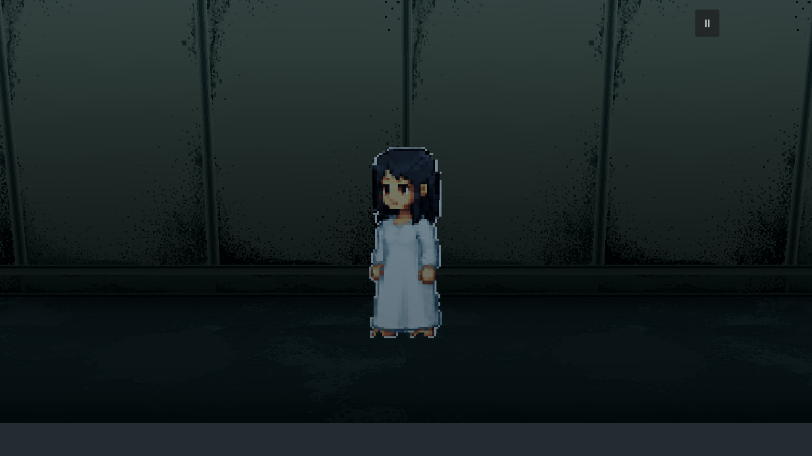
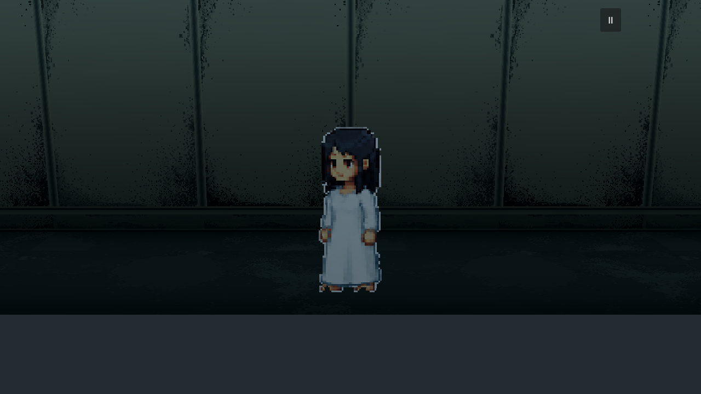
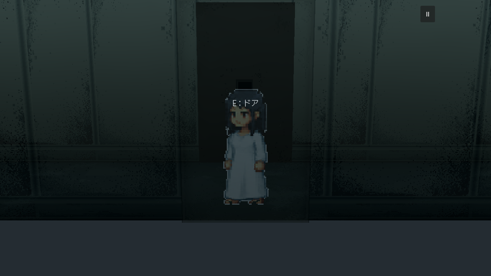
使用真实CharacterBody移动和原碰撞，B镜头、50%显现。GIF以640×360精确缩半、共享调色板输出，首尾增加停顿方便观察；1280×720逐帧PNG与原始状态时间保留。
固定位置、固定角色帧，分别拍“有人物／隐藏人物”图对，测量人物对画面的差异信号；再与前侧墙完全隐藏时比较。50%状态保留约一半的人物对比度，100%实体时信号接近0，角色被挡住。这是实测遮挡影响，不是最终强度选择。
| 镜头 | 50%半显：对比度保留 | 100%实体：对比度保留 |
|---|---|---|
| A | 50.3% | 0.0% |
| B | 50.3% | 0.0% |
| C | 50.3% | 0.0% |
| D | 50.3% | 0.0% |
| E | 50.1% | 0.0% |
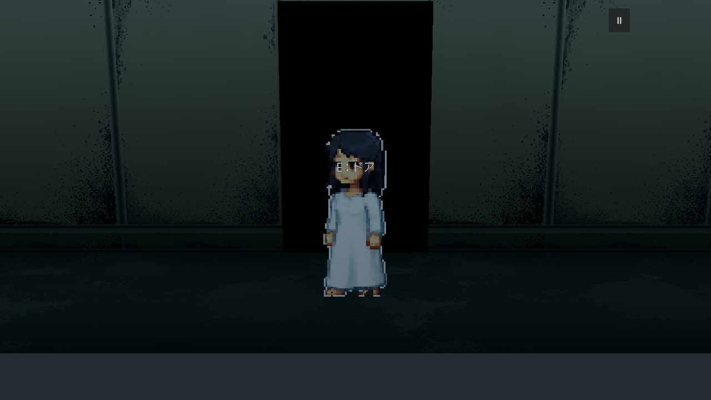
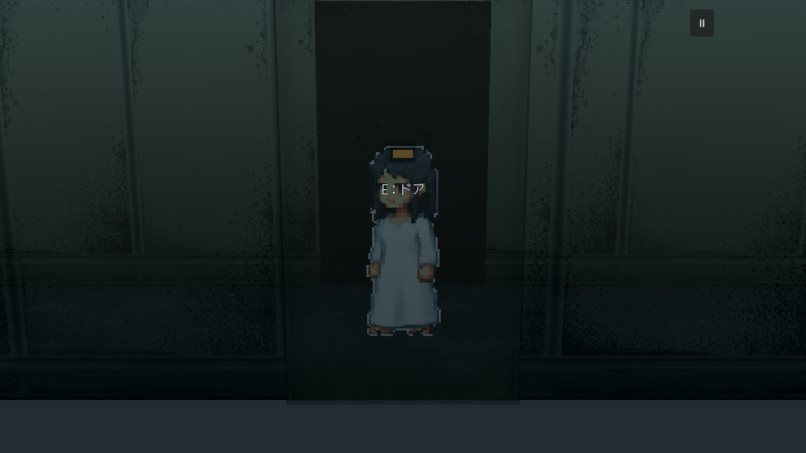
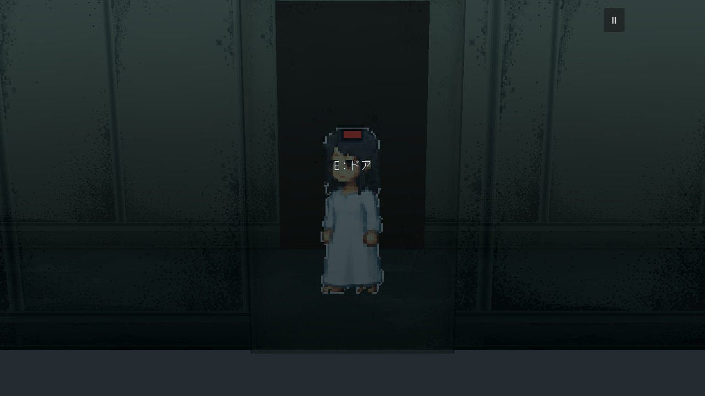
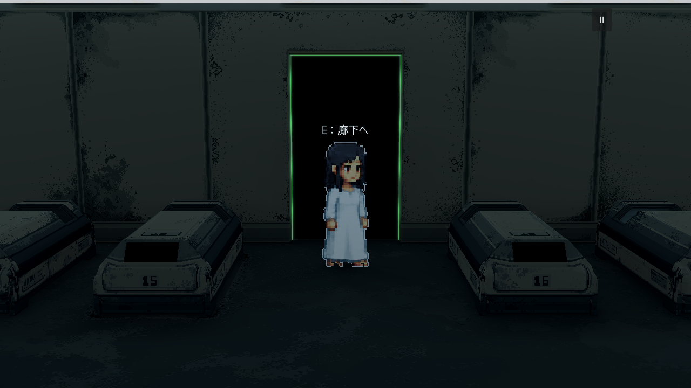
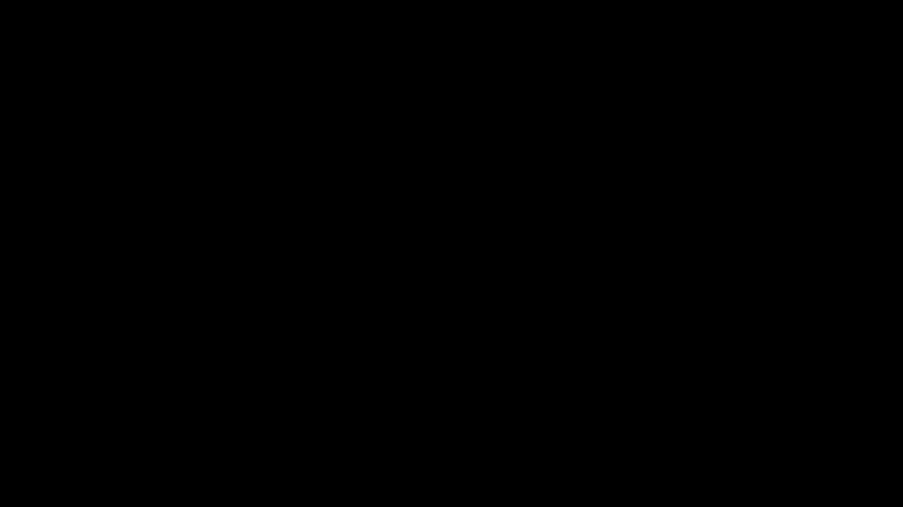
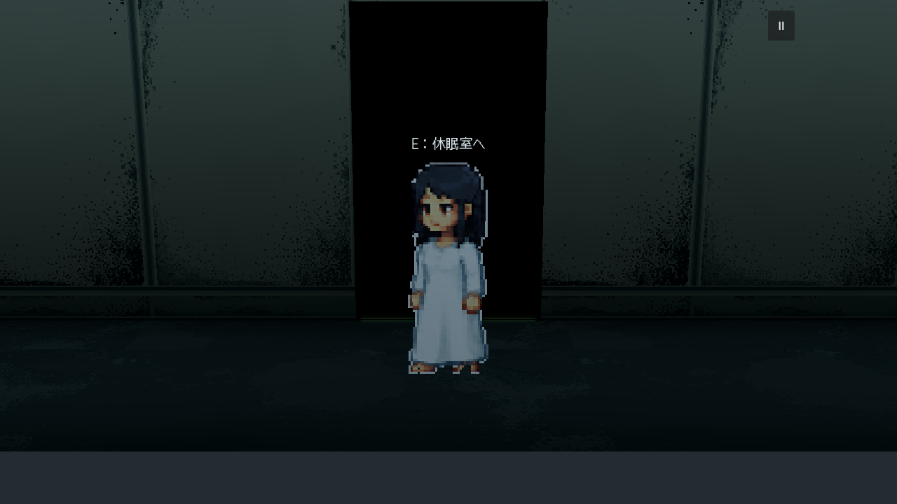

120组相机位置检查通过；原Room1镜头恢复、隐藏墙碰撞、门禁拒绝、黑屏下换镜与返回通过。阈值附近往复没有重复显隐。其他连接区／楼梯仍沿用旧镜头与既有灰盒。F5与v5入口保持，本页不选定最终组合；仍需用户决定镜头、触发方式和显现强度。